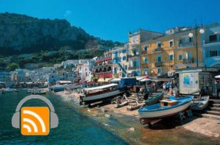

Capri is a very popular tourist location for both Italians and foreigners. Situated on the southern side of the Gulf of Naples in the Campania region, it has been a celebrated beauty spot and resort since the time of the Roman Republic. In this epsiode, Lorena de Pascale of the Capri tourism office is guiding us through some important facts and attractions of the island. Don't miss their photo gallery too.